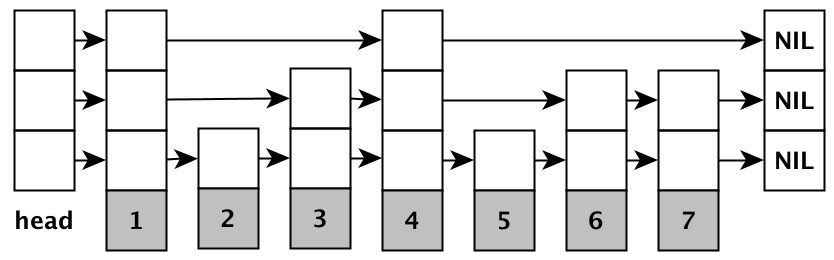

The Skip List[1] is a probabilistic data structure
that has the same average case asymptotic performance as more complex data structures
such as AVL trees, balanced trees, etc. on average. The following is a hopefully more
understandable analysis, curated from various sources.

Figure 1: graphical representation of a skip list.
Expected number of nodes at level l
Firstly we see how to express L(n), the level at which there are 1/p
nodes, in terms of n. From the way that the RandomLevel function is
defined, pl−1 is the probability[2] that any
given node will have an l-level pointer with the lowest level being level 1[8].
randomLevel()
newLevel := 1
-- random() returns a random value in [0..1)
while random() < p do
newLevel := newLevel + 1
return min(newLevel, MaxLevel)
William Pugh's original RandomLevel function[1].
Note that this function takes non-constant[4] time.
Intuitively[3], multiplying this by the number of nodes
in the list gives us the expected number of nodes in each level:
#(n,l)=npl−1
Finding the expression for L(n) simply requires some logarithms:
npL(n)−1nlgnL(n)=p1=p−L(n)=L(n)lgp1=logp1n
Expected length of search paths
We will now analyze the expected length of a search path, i.e. how many
movements to make in order to get to any node within the list by adopting the
approach of the original paper:
We analyze the search path backwards, travelling up and to the left. Although the
levels of nodes in the list are known and fixed when the search is performed, we
act as if the level of a node is being determined only when it is observed while
backtracking the search path.
Let cost(k) denote the expected cost (the number of movements
needed) for climbing up k levels in an infinite list – no matter how
many leftward movements we make, we never reach the header of the list. When
we reach any level k we will be able to either:
Since we are analyzing an infinite list, we cannot use cost(k)
all the way for n=∞. So we'll only use this technique until we've
reached a level where we know that we have a fixed amount of nodes, independent
of n. Where is such a level? L(n)! When we are at level L(n)
we expect 1/p nodes. It follows that the number of nodes at level
l+L(n) is:
p1pl=pl−1
Again assume that there are ∞ levels after L(n), and take
the pessimistic assumption that we need to traverse every node along all of the
levels to the topmost level. The upper bound on the total movements required to
get to the topmost level ∞ is then:
l=1∑∞pl−1=1−p1
Combining this with the previous results, we use the cost function until level
L(n) and add the number of movements we make afterwards, we end up with
the same expression for the expected upper bound as given by the paper:
cost(L(n))+1−p1=pL(n)+1−p1≈O(logn)
Bounding the height
We will follow the analysis given in [5], a more straightforward
way to derive the asymptotic cost of traversal operations. Let Pl denote the
probability of there being at least one node in a list of size n in the
l-th level. We have established previously that the probability of a node
being in level l is given by pl−1:
Pl≤npl−1,
because each of the n nodes have equal chance of being part of level
l, and Pl is the probability of any of those n nodes
being part of level l. The probability of there being a node at level
(clogp1n+1) is:
Pclog1/pn+1≤npclog1/pn=np−clogpn=nn−c=nc−11
Thus we can say that the probability that the height of the tree will be lower
than, say 3logp1n+1 is given by[6]1−1/n2. Therefore the height of the tree grows logarithmically
with high probability and thus it follows that the traversal operations
are also O(logn).
Probabilistic Analysis
We now proceed to do a probabilistic analysis of the Skip List search path
length - instead of just finding the expected length we can now find the
probability distribution of the length. This approach is almost the same as
the one in the original paper.
We will use two distributions: the binomial distribution B(n,p)
and the negative binomial distribution[9][10]NB(s,p). Let B(n,p) denote a random variable equal to the
number of successes seen in a series of n trials each with success p.
Similarly let NB(s,p) denote a random variable equal to the number
of failures, each occuring with probability 1−p before s
successes are seen.
Let's first climb to level L(n). Intuitively we need to climb up
L(n)−1 levels, and then add a certain number of leftward movements
in case there is no level above us. This number of movements is given by
NB(L(n)−1,p).
To see why, consider the following: the probability that we
have to move leftwards once is 1−p. Thus NB(1,p) tells us
the number of leftward movements ('failures') we have to make in order to
have a level above us ('success'). Therefore the cost to climb up to level
L(n) in an infinite list is:
(L(n)−1)+NB(L(n)−1,p)
Next let's find the remaining movements to make so that we reach the top of
the header of the list. Remember that we are at level L(n) now, and
the number of nodes at L(n) is given by B(n,1/np).
Figure 2: leftward movements needed to reach the header.
Therefore we need to move left B(n,1/np)+1 times in order to
reach the header of the list (refer to Figure 2 for a visual aid). Once
we are there, we need to move up NB(1,1−p) times[11]
now to reach the top of the header, and the starting point of our search.
Therefore we have:
B(n,1/np)+1+NB(1,1−p)
Now we combine our results to provide an upper bound (because the negative
binomial distribution can include infinite trials) on the search path length
for finite lists:
(L(n)−1)+NB(L(n)−1,p)+B(n,1/np)+1+NB(1,1−p)
The expected value of such an expression is:
(L(n)−1)+p(L(n)−1)(1−p)+p1+1+1−pp,
which after some rearrangement you should find that it is equal to the
previous expression that we've found for the expected length of the
search path,
pL(n)+1−p1
Avg. number of pointers per node
Finally let's warm down by looking at how to get the average number of pointers
per node, which should be relatively straightforward:
total(n)=l=1∑∞#(n,l)=nl=1∑∞pl−1=1−pn
To get the average number of pointers required, just divide by n,
in which we will end up with 1/(1−p). The above expression also
implies that the storage requirements are O(n).